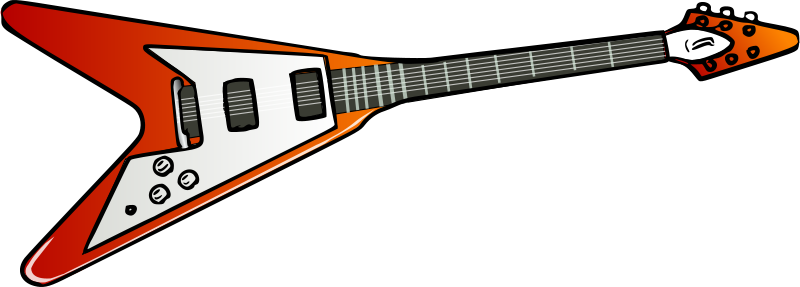

A Gibson Flying V, com seu design ousado e som potente, se tornou uma das guitarras mais icônicas da história do rock and roll. Sua jornada, no entanto, nem sempre foi fácil, marcada por altos e baixos. Nascida em 1957, a Flying V foi parte de uma linha de guitarras "modernistas" da Gibson, idealizadas pelo presidente Ted McCarty para competir com a Fender. Apresentada ao público em 1958, ao lado de modelos como a Explorer e Futura, a V se destacava pelo design radical, inspirado em carros e foguetes da época. Nos anos 60, a guitarra ganhou notoriedade nas mãos de artistas como Albert King e Lonnie Mack. Jimi Hendrix, um dos maiores guitarristas de todos os tempos, adotou a V em 1969, eternizando-a em apresentações memoráveis como Woodstock. A partir dos anos 70, a Flying V se tornou um símbolo do rock pesado, com nomes como Ritchie Blackmore, Michael Schenker, Randy Rhoads e Kirk Hammett empunhando-a em suas performances eletrizantes. Atualidade: Apenas 98 Flying Vs originais foram produzidas entre 1958 e 1959, tornando-as peças extremamente raras e valiosas. A guitarra já foi utilizada em diversos gêneros musicais, além do rock, como blues, jazz e country. O design da Flying V inspirou diversas outras guitarras ao longo dos anos.
E bem-vindo à segunda página!
ir para a página 1 